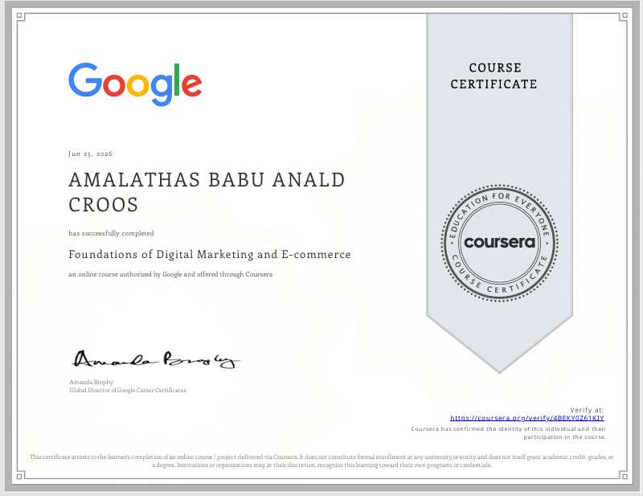
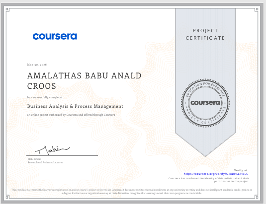

About Me
Amalathas Babu Anald Croos
Hi, I’m Anald Croos.
I’m a Marketing Management undergraduate at the University of Sri Jayewardenepura, and I’m also pursuing a Bachelor of Information Technology at the University of Moratuwa. Studying both marketing and IT has shaped the way I look at problems not only from a business and customer perspective, but also from a technology perspective.
My main interests are digital marketing, brand management, social media marketing, market research, data analysis, and business technology. I enjoy understanding how people respond to brands, how businesses can improve their digital presence, and how technology can be used to make everyday business work easier.
Alongside my studies, I work on my own projects to turn what I learn into something practical. I have worked on marketing research, website ideas, digital solutions for businesses, and software projects such as a Payroll Management System, Web application. I also have growing experience with programming, Python, SQL, web technologies, and system development.
I’m someone who learns by doing. When I find something interesting, I prefer to explore it, build something with it, make mistakes, and improve it rather than just learning the theory.
My career journey is just beginning, and this website is a place where I build, showcase, and update my work along the way. It brings together the projects I create, the skills I develop, the experiences I gain, and the things I continue to learn as I grow professionally.
In the future, I want to build a career where marketing, technology, creativity, and business come together. I’m particularly interested in gaining real industry experience, working on meaningful projects, and eventually building something of my own in the digital space.
Still learning. Still building. Still growing.

Education
Bachelor of Science Honors in Marketing Management
Department of Marketing
Faculty of Management Studies & Commerce
University of Sri Jayewardenepura
Duration: 4 Years
Status: 3 rd Year
Bachelor of Information Technology (External)
Department of Information Technology
Faculty of Information Technology
University of Moratuwa
Duration: 3 Years
Status: 2nd year
Skills
PROFESSIONAL SKILLS
- Brand Management
- Marketing Strategy
- Digital Marketing
- Social Media Marketing
- Consumer Behaviour Analysis
- Market Research
- Business Analysis
SOFT SKILLS
- Communication
- Leadership & Teamwork
- Problem Solving
- Adaptability
- Quick Learner
- Time Management
TECHNICAL SKILLS
Programming & Database
- HTML, CSS
- JavaScript
- Python
- SQL
- C# & Visual Studio
Digital & Business Tools
- Microsoft Office
- Power BI & MS Access
- Canva, CapCut & WordPress
ERP Systems
- SAP S/4HANA (MM,SD, FI)-Basic
Projects

Project Name - SunRise Hotel Website
Designed and developed a responsive multi-page hotel website to showcase hotel rooms, facilities, dining services, and contact information. The project focused on creating a simple, user-friendly web interface with structured navigation and attractive content presentation.
Key Features:
Multi-page hotel website
Rooms & Facilities section
Dining & Services section
Contact and enquiry form
Responsive web layout
Navigation and social media integration
Technologies: HTML5, CSS3, JavaScript
WEBSITEProject Name - Payroll Management System


Developed a desktop-based payroll management system to manage employee information, attendance, salary calculations, advances, and bonuses through a structured user interface.
Key Features:
Employee management
Attendance management
Salary processing
Advance and bonus management
Login and user authentication
Structured payroll data management
Technologies: C#, .NET Windows Forms, SQL Server, Visual Studio
Certifications

Foundations of Digital Marketing and E-commerce
Google Career Certificates
Completed a foundational course covering digital marketing and e-commerce concepts, customer journey and marketing funnels, digital marketing strategy, SEO, SEM, social media marketing, email marketing, and performance measurement.
Skills: Digital Marketing, E-commerce, Marketing Strategy, SEO, SEM, Social Media Marketing, Email Marketing, Marketing Analytics
CERTIFICATION

Business Analysis & Process Management
Coursera Certificates
Developed practical knowledge in business analysis and process management, including business process modeling, process mapping, stakeholder analysis, process evaluation, and identifying solutions to business problems. Gained hands-on experience creating and analyzing process models using Lucidchart.
Skills: Business Analysis, Business Process Modeling, Process Mapping, Process Analysis, Stakeholder Analysis, Process Management, Lucidchart
CERTIFICATION
My Journey
2019 – Champion | Sport Captian
2019/2020 – Chife Prefect
2020 – Overall Best Performer
2020 – Champion | House Captian
2022 – G.C.E. Advance Level (Commerce Stream) 3 A's
2024 – Enrolled at the Faculty of Management Studies & Commerce, University of Sri Jayewardenepura
2025 – Bachelor of Information Technology (External) — University of Moratuwa Currently Pursuing
A NAME TODAY, A MOTIVATION TOMORROW.
Resume
Here’s a quick overview of my professional background. You can download my resume below.
Contact
Email: analdcroos21@gmail.com
Phone: +94 768345674
Location: Gangodawila, Nugegoda, Colombo, Sri Lanka